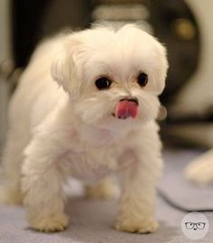
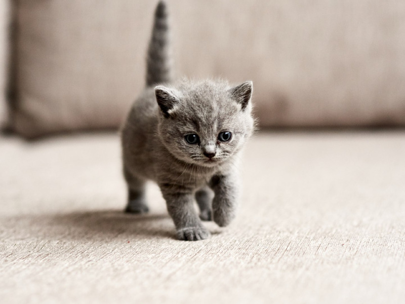
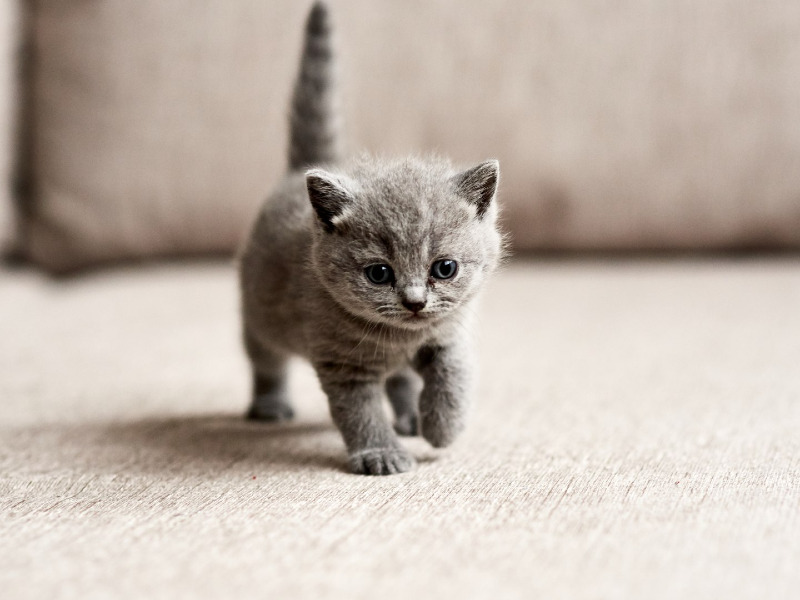

Somos una ONG
Sin fines de lucro
buscamos
para nuestros caninos y felinos
Nuestra organización sin fines de lucro se dedica a fomentar la adopción responsable de perros y gatos.

Nuestra organización sin fines de lucro se dedica a fomentar la adopción responsable de perros y gatos.

somos parte de esta organización sin fines de lucro dedicada
a la protección y bienestar de animales
domésticos. En particular, nos enfocamos en la adopción
de perros y gatos que han sido
abandonados o rescatados de situaciones de maltrato. Creemos
firmemente que todos los
animales merecen amor, cuidado y un hogar seguro y saludable.
Nuestra misión es promover la adopción y educar a la comunidad
sobre la importancia
de brindar cuidado y protección a los animales. Juntos, podemos
hacer la diferencia en la vida de estos seres vivos tan especiales."

hola

jjjjjjj
pokojonnn
 
